MOS AI
MOS AI helps you find records, understand shared feedback, plan your development and follow MOS guides. Answers use records you can access in your selected group and link back to their sources.
Open MOS AI and ask a question
- Select your group in MOS.
- Select MOS AI in the navigation, or use the MOS AI button at the bottom right of a page.
- Choose a suggested question or type your own, then select Send.
- Open the source cards beneath the answer to check the supporting records.
- Ask a follow-up in the same chat to continue with the same context. Select New chat to start a different topic.
Use Expand MOS AI to full page in the panel for more space. Your conversations continue between the panel and the full page.
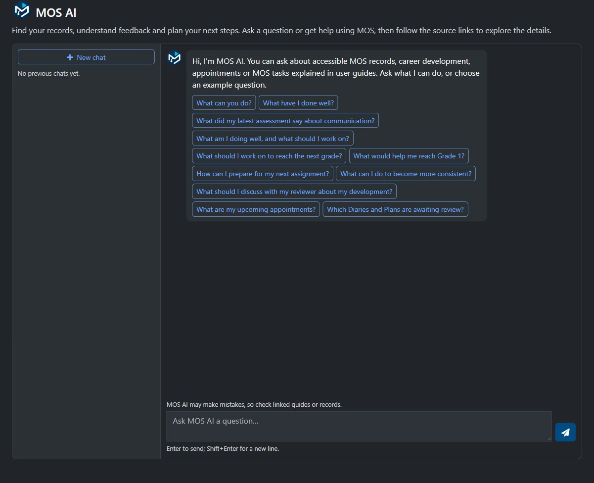
Captured 11 November 2026.
Loading and progress
Both the compact panel and full page show a spinner while loading your chats or opening a previous conversation. Animated thinking dots and a progress message appear while MOS AI prepares a reply. Spinners also appear while loading record options, finding officials, preparing fields or checking and saving an appointment response.
While a conversation loads or a reply is being prepared, the Send button shows that MOS AI is busy and chat controls are temporarily unavailable. Wait for the loading indicator to clear before starting another chat action. Replies, prepared fields and appointment changes are complete only when the result appears; a loading indicator is not a saved result.
If a request fails, MOS AI clears its loading indicator and displays the error. For a reply error you can retry, your question returns to the question field for you to review. If your sign-in expires, sign in again before continuing. For an appointment error, use Refresh appointment to check the current response before retrying. Spinners and thinking dots respect your device's reduced-motion preference.
Questions to try
| What you want to do | Example question |
|---|---|
| Find records | Show my recent reviewed records. |
| Check a review queue | Which Diaries and Plans are awaiting review? |
| Understand feedback | What did my latest reviewer feedback say? |
| Reflect on a skill | What do my records say about my positioning? |
| Prepare a development plan | Turn my feedback into a draft development plan. |
| Continue a plan | Make the goals more practical and add a check-in after four fixtures. |
| Check appointments | What are my upcoming appointments, and have I accepted them? |
| Get MOS help | How do I create a Diary entry? |
Check the sources
Answers can include numbered references such as [S1], linked record cards and a Sources used list. Select a record card or expand the source list to open the supporting record. Cards identify the official, reviewer and feedback read status when these details are available to you.
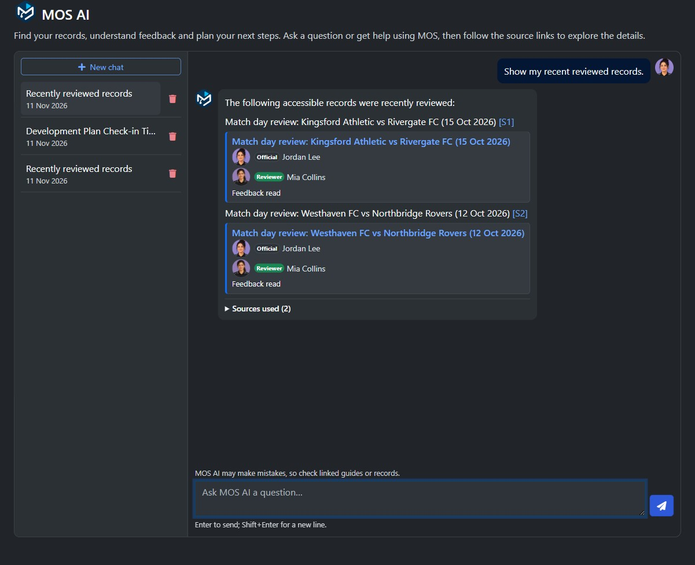
The names and sample records shown are fictional.
Draft and refine a development plan
Ask MOS AI to turn your accessible feedback into a draft with a goal, practice steps, a check-in and an evidence basis. Continue in the same chat to refine one part, such as making the check-in after four fixtures. Suggested follow-up questions offer other ways to explore the answer.
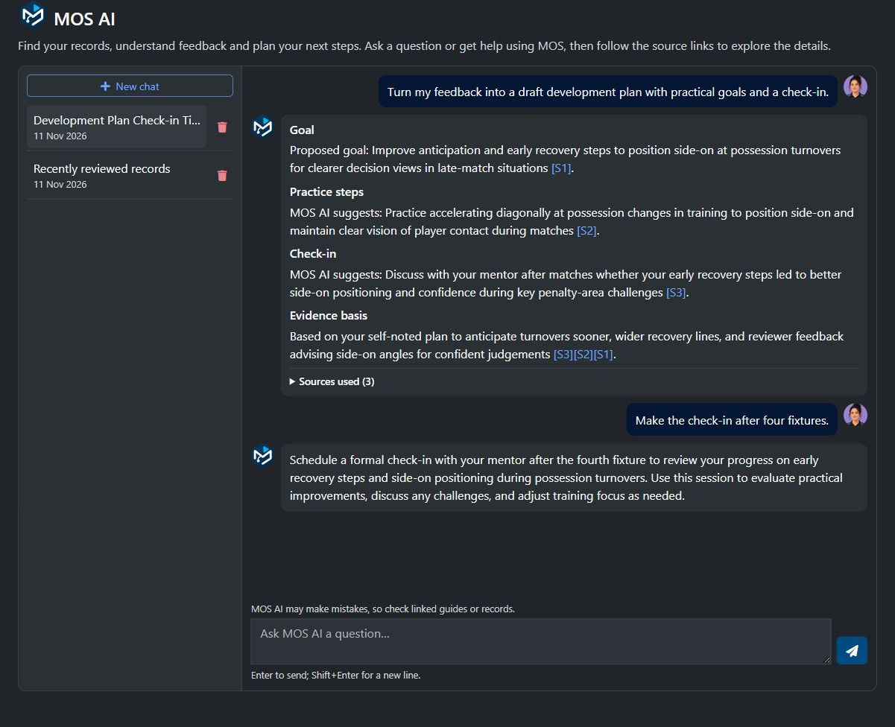
Check the cited evidence and refine the draft in chat. To prepare it for saving as a Plan, use Prepare record and review it in the MOS editor.
Continue a chat while using MOS
Open the compact panel from another MOS page to continue a conversation without leaving your work. Use Chats to reopen a previous conversation and the expand button in the panel header to continue on the full page. You can also ask how to complete a MOS task and follow the linked guide for the complete steps.
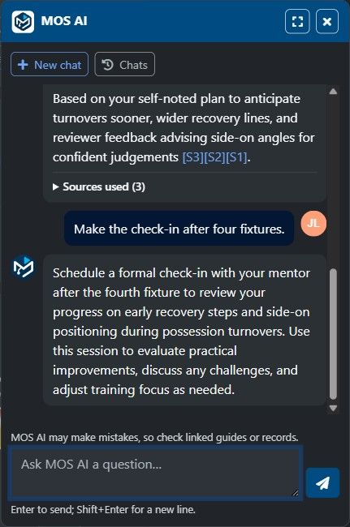
Get step-by-step help
Ask how to complete a MOS task, such as creating a Diary entry. MOS AI summarises the steps and links to the relevant user guides. Expand Sources used to see the guides it checked. Where available, an additional link opens the relevant MOS page.
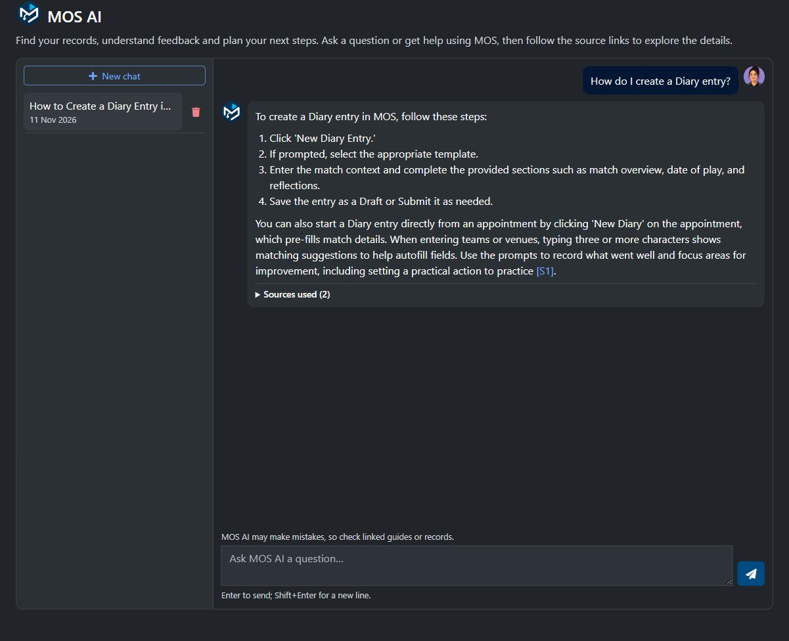
Use MOS AI on your phone
On a small screen, the conversation uses the full width. Select Chats to open your conversation list, then select a chat to reopen it. Close the list to return to your question, or select New chat to start a different topic.
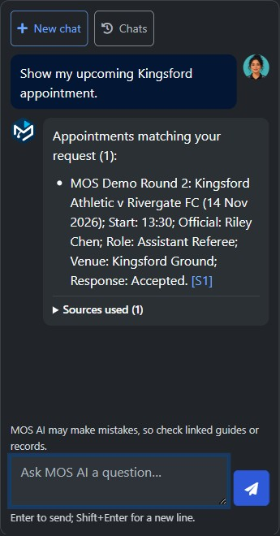
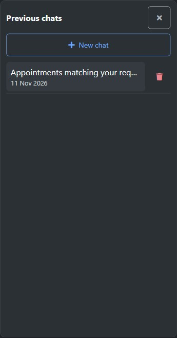
Availability
MOS AI has three access levels for each group:
| Access level | Who can use MOS AI |
|---|---|
| Enabled for all users | Every member of the group. This is the default for new group settings. |
| Enabled for privileged roles (not users) | Members with a Viewer, Reviewer, Trainer, Communications, Files Manager, Selector, Appointer or Owner role. An ordinary member with no privileged role cannot open the chat. |
| Disabled | MOS AI is unavailable in the group. |
The group's AI features must also be enabled. Switching groups can change your access. Each answer still respects your normal record permissions, whichever access level the group uses. Previously disabled groups keep their existing setting when the access levels are introduced.
Career questions and progress
Ask about one skill, a recent performance or a period of time. MOS AI uses Diaries, assessments, feedback shared with you, Plans, appointments, and user guides that you can access in the selected group.
| Focus | Try asking |
|---|---|
| Recent performance | What did I do well in my last match? |
| Shared feedback | What did my latest reviewer feedback say about communication? |
| Progress | Has my positioning changed this season? |
| Compare seasons | Compare my communication this season with last season. |
| Your goals | What evidence shows progress against my Plan? |
| Reviewer discussion | What should I discuss with my reviewer? |
Understand the evidence
- Open the linked records to check each observation. MOS AI distinguishes your own notes from shared reviewer feedback.
- When evidence is sparse, conflicting or missing for a period, MOS AI explains the limitation. A Plan goal is a proposed intention, not proof of improvement.
- Ratings can be compared as higher or lower only when the cited record contains numeric values for the same competency. Text-only labels are not ranked, and different scales are not combined.
- Suggested next steps are optional. MOS AI cannot determine whether you are ready for selection or formally eligible for promotion.
Follow-ups retain the skill and season focus. Select New chat when changing topics.
Turn feedback into a Plan
Ask for a development-plan draft, then refine the goal, practice steps or check-in. MOS AI checks that the draft is supported by accessible evidence and labels its own suggestions.
The conversation does not automatically save it as a Plan. Use the preparation panel to choose Plan and its configured type, then select Prepare fields. Check the proposal, select Review in MOS and save it in the MOS editor.
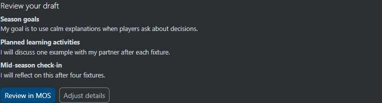
Prepare a Diary or reviewer assessment
- Ask MOS AI to create a Diary, Diary Draft or assessment. Include the event and your observations; add missing details through follow-up messages.
- In the preparation panel, choose the record type, the date of play if known and, for a reviewer assessment, the official you are authorised to assess. Choose a Plan type when preparing a Plan.
- Add any further observations and select Prepare fields. MOS AI uses the selected group's template and identifies fields you still need to complete.
- Select Review in MOS to open the filled editor. Check the wording, dates and event details; choose ratings, subgroup and sharing options yourself.
- Use the normal Save Draft, save or submit action. Opening the prepared form does not save it, and its autosave stays paused until you explicitly save.
MOS AI can prepare your own Diaries and Plans, and new Match Day, Season, Media and Custom assessments allowed by your normal permissions. It does not edit existing records. For a Custom assessment, include a name such as “Review title: Positioning check-in”. After saving a reviewer draft, reopen it through the normal assessment list to continue editing. Earlier feedback is not treated as an observation from a new match. Unknown dates and unsupported ratings remain blank.
If no template exists for the selected date or the template changes before the editor opens, return to MOS AI and prepare the record again. Prepared forms expire after 15 minutes and stay within the same browser tab, account and group.
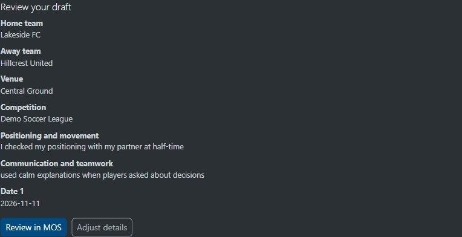
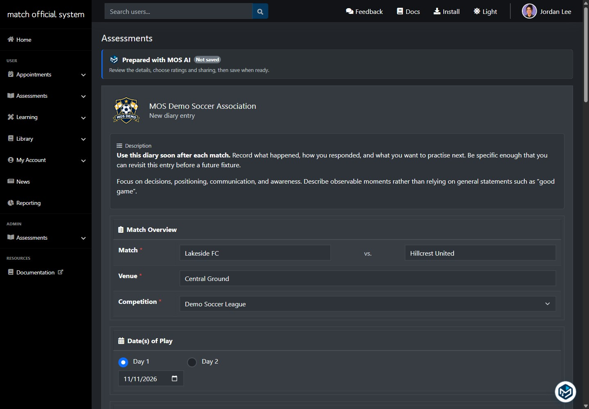
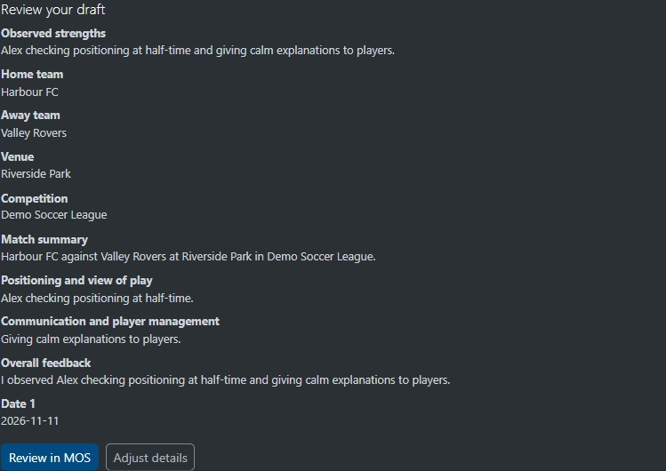
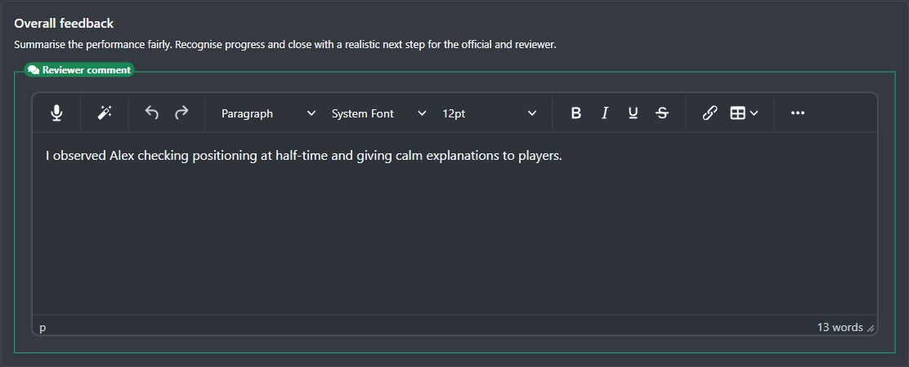
Respond to appointment cards
Ask What are my upcoming appointments? to see whether your response is pending, accepted or declined. Cards show the event, date, time, venue and assigned role, with a response deadline when available.
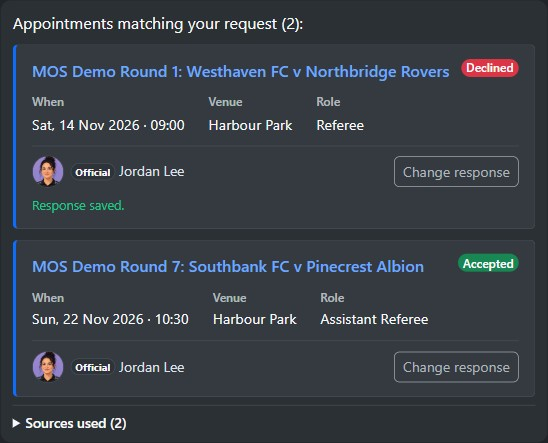
- For a pending appointment, select Accept or Decline. For an appointment you have already responded to, select Change response.
- Check the event and date in the confirmation modal, then confirm or cancel. MOS AI refreshes the appointment before recording a response.
- The card updates after a successful save. If an error appears, refresh the card to check its current status before trying again.
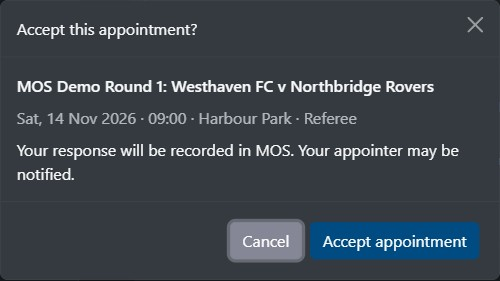
You can also ask to accept or decline a particular appointment; MOS AI shows the matching cards so you can confirm one appointment at a time. Other officials' cards are read-only. Organisations using an external appointment system keep their responses in that system.
For a review queue, ask which Diaries and Plans are awaiting review; results include only accessible records currently awaiting review.
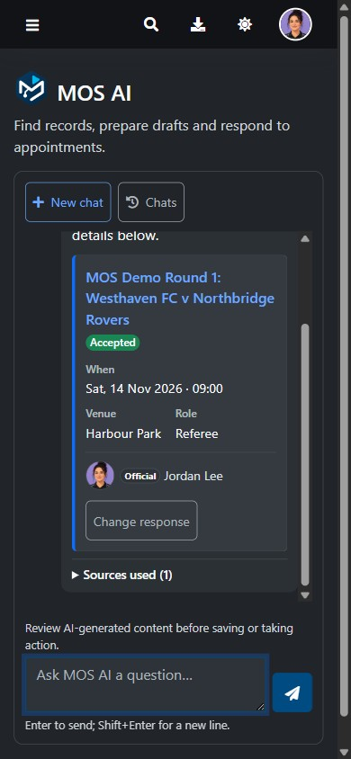
Exams, training and privacy
MOS AI can help you find an exam or training activity and explain how to use MOS. It cannot supply answers, hints or answer checking, rewrite activity responses, or complete or submit those activities for you.
MOS AI cannot provide personal contact details in chat. Use Search Users to view any details available to you.
Conversations are private to your account and selected group. You can reopen or delete them; they expire 90 days after their last activity. Temporary preview conversations clear when you exit the preview.
Review AI-generated content before saving or taking action. Check prepared fields and linked records.